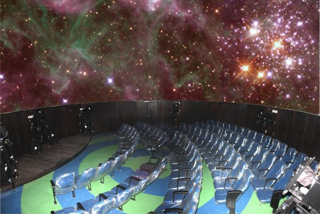

O Planetário de Brasília foi inaugurado em 15 de março de 1974. Ao ser inaugurado, o espaço público recebeu o
equipamento mais avançado da época, o projetor central astronômico SpaceMaster.
O prédio foi projetado pelo arquiteto carioca Sérgio Bernardes. Sua estrutura remete à imagem de um disco voador
pousado sobre o gramado do Eixo Monumental e foi desenhada com a ideia de unir o céu e o mar. O prédio tem três
mil metros quadrados de área construída e fica em um lugar privilegiado: entre a Torre de TV e o Centro de
Convenções Ulysses Guimarães.
Na década de 1990, a programação dava atenção a todo tipo de público. Crianças de 4 a 8 anos assistiam ao
Robozinho Blitz e as Estrelas. A garotada de até 12 anos curtia Pedrinho e o vagalume. Adolescentes, jovens e
adultos se distraíam com Viagem pelo Sistema Solar e A Terra do Cosmos. O planetário funcionava de terça-feira a
domingo, com dias especialmente dedicados a alunos de escolas públicas e particulares do DF. Ainda durante a
década de 1990, a gestão foi transferida da Fundação Cultural para a então Secretaria do Meio Ambiente, Ciência
e Tecnologia (Sematec).

Após passar por uma reforma para corrigir questões estruturais, o Planetário foi reinaugurado em 11 de dezembro
de 2013. O prédio ainda possui o equipamento de projeção analógico original, o SpaceMaster, e passou a contar
também com um novo modelo digital atualizado, o Power Dome VIII, que exibe imagens tridimensionais e imersivas
acompanhadas de som de alta definição, cuja fabricação também é da Carl Zeiss. Ao lado das sessões de cúpula, o
espaço público também passou a oferecer regularmente para a população exposições e eventos educativos, culturais
e científicos ligados à astronomia.